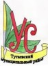

Муниципальное общеобразовательное учреждение средняя школа №6 Тутаевского муниципального района
г. Тутаев, Ярославская обл.
Управляющий совет школы
УПРАВЛЯЮЩИЙ СОВЕТ - это коллегиальный внутришкольный орган, состоящий из избранных, кооптированных и назначенных членов и имеющий управленческие (властные) полномочия, определенные Уставом школы, по решению вопросов функционирования и развития учреждения.
Управляющий совет МОУ СШ №6 зарегистрирован и функционирует с 2005 года.
(Приказ о регистрации Управляющего совета средней школы № 6)
История создания УС
В мае 2004 года директору Департамента образования администрации Тутаевского муниципального округа поступило письмо, подписанное зам. директора департамента образования Ярославской области М.В. Груздевым, в котором было предложено сформировать рабочую группу по обеспечению внедрения новой формы управления школами. В соответствии с данным письмом департаментом образования администрации ТМО был составлен «План мероприятий по созданию управляющих советов в пилотных школах №5 и №6 Тутаевского муниципального округа» (Приложение ). Согласно этому плану, директор нашего образовательного учреждения утвердил «План работы по созданию Управляющего совета в СОШ №6» (Приложение ).
В декабре 2004 года на основании приказа директора в школе была создана рабочая группа по подготовке и проведению выборов в Управляющий совет. В это же время на Общем собрании трудового коллектива было принято Положение об Управляющем совете муниципального образовательного учреждения средней общеобразовательной школы №6. Также была подготовлена другая нормативно-правовая база – Положение о порядке выборов в Управляющий совет СОШ№6, Положение о порядке кооптации членов Управляющего совета СОШ№6, внесены изменения в Устав нашего образовательного учреждения.
Рабочей группой был составлен «Алгоритм проведения предвыборной кампании и выборов в Управляющий совет СОШ №6»:
Приказ учредителя о работе МОУ СОШ №6 в статусе региональной экспериментальной площадки по усилению общественной составляющей в управлении школой.
Приказ директора школы о создании рабочей группы по организации и проведении выборов. Распределение обязанностей среди членов рабочей группы.
Приказ Учредителя о назначении даты выборов (22 – 23 декабря 2004 г.).
Выдвижение кандидатов в члены УС:
- категория «Родители» – на общешкольной родительской конференции;
- категория «Учащиеся» – на заседании совета старшеклассников;
- категория «Учителя» – на педсовете.
Выпуски информационных листков со сведениями о кандидатах.
Подготовка приглашений на выборы (для родителей)
Приглашение родителей на выборы (через классных руководителей).
Подготовка бюллетеней.
Подготовка помещения для голосования.
Проведение голосования (в день голосования – проведение родительских собраний)
22.12.2004 – I смена, 23.12.2004 – II смена.
Подсчет голосов, оформление соответствующего протокола, передача его директору школы.
Передача списка избранных членов Управляющего совета Учредителю.
Приказ Учредителя об утверждении состава Управляющего совета МОУ СОШ №6.
Следует отметить, что согласно Положению о порядке проведения выборов в Управляющий совет СОШ №6, голосование проходило тайно по каждой категории с соблюдением всех юридических норм (Приложение).
Таким образом, в декабре 2004 года в нашем образовательном учреждении появился новый орган общественно-государственного управления школой – Управляющий совет МОУ СОШ №6, была создана нормативно-правовая база: Положения об Управляющем совете МОУ СОШ №6, о выборах, порядке кооптации, номенклатура дел Управляющего совета. На сегодняшний день нашему коллегиальному органу управления уже 12 лет. Сейчас заканчивает работу четвертый состав Управляющего совета школы.
Нормативные документы
В 2004 году был дан старт федерального эксперимента по апробации новой модели управления образованием с участием Управляющих советов. Наше образовательное учреждение получило статус региональной экспериментальной площадки. В декабре состоялись выборы первого состава УС школы, а в январе 2005 года УС был первым зарегистрирован в Ярославской области. Были разработаны и утверждены нормативные документы, регламентирующие деятельность Совета. В процессе работы накапливались изменения и в 2009 году на заседаниях Управляющего совета эти изменения были рассмотрены и приняты.
На сегодняшний день деятельность Управляющего совета регламентирована следующими нормативными документами:
Положение о выдвижении регистрации и статусе кандидатов в Управляющий Совет муниципального образовательного учреждения средней общеобразовательной школы №6 (Приложение )
Положение о голосовании и определении результатов выборов кандидатов в Управляющий Совет муниципального образовательного учреждения средней общеобразовательной школы №6 (Приложение )
С 1992 года школьная форма была отменена в связи с принятием нового Закона «Об образовании». Закон РФ от 10.07.1992 № 3266-1 "Об образовании" гласил, что школа имеет право самостоятельно на основе своего устава определять права и обязанности ученика, если это не противоречит другим законам. Порядок введения школьной формы никакими нормативными документами не регламентирован и относится к компетенции образовательного учреждения, но в обязательном порядке должен быть зафиксирован в уставе или другом локальном акте, регламентирующем деятельность школы.
Так как вопрос о школьной форме может являться предметом рассмотрения органов управления образовательного учреждения: совета школы, родительского комитета, классного и общешкольного родительских собраний, Управляющего Совета. Окончательное решение принимается по соглашению всех родителей школьников или большинства.
Поэтому решением УС МОУ СШ №6 было принято решение о введении школьной формы в нашем образовательном учреждении. Школьная форма вводилась поэтапно. В 2005-2006 учебном году- для обучающихся начальной школы, в 2009-2010 учебном году – для основной и старшей школы.
На сегодняшний день Управляющим Советом школы разработаны единые требования к внешнему виду обучающихся нашего ОУ.
Для этого Управляющим советом для родительской общественности и старшеклассников был проведен совместно с предприятием «Школьная мода» показ коллекции школьной формы (приложение). Затем, путем голосования выбирались основные критерии для определения основных позиций формы нашей школы (приложение).
Одной из причин затрудняющих профессиональное самоопределение школьников является незнание мира профессий, неумение разобраться в различных видах профессиональной деятельности.
Эта проблема остается актуальной по сей день.
В рамках работы УС и помощи в самоопределении учеников в дальнейшем выборе было принято решение о проведении ежегодного «Урока успеха».
Цели:
Формирование конкретно-наглядных представлений о различных профессиях.
Развитие кругозора и дифференцированного восприятия.
Воспитание уважительного отношения к людям труда.
Привлечение родительской общественности в воспитательный процесс школы.
Первый урок успеха прошел в 2005 году, в День Учителя. В школу были приглашены руководители и предприниматели нашего города, которые рассказали учащимся о специфике своей работы, раскрыли некоторые секреты успешного предпринимательства. Это первый опыт такого сотрудничества, работа в данном направлении была продолжена в последующие годы.
В рамках единого профориентационного дня «Урок успеха» проводятся классные часы, экскурсии и встречи с представителями профессий. Особое внимание в проведении уроков уделяется учащимся, которым предстоит сделать свой профессиональный выбор в ближайшее время – учащимся 8- 11 классов. В рамках мероприятия для ребят проходят презентации рабочих специальностей, востребованных на территории Ярославской области, экскурсии на предприятия, мастер-классы и т.п.
В результате проведения единого профориентационного дня мы решаем следующие вопросы:
выработка у школьников сознательного отношения к труду, профессиональное самоопределение в условиях свободы выбора сферы деятельности в соответствии со своими возможностями, способностями и с учетом требований рынка труда.
получение данных о предпочтениях, склонностях и возможностях учащихся для выборапрофиля обучения;
обеспечениевариативности профильного обучения;
выработкасистемы сотрудничества средней истаршей ступени школы для профессионального образования, а также с предприятиями округа и города;
оказания профориентационной поддержки учащимся в процессе выбора профиля обучения и сферы будущей профессиональной деятельности.
Сегодня единый профориентационный день – одно из самых ярких событий школьной жизни, проводимых под эгидой Управляющего совета школы (Приложение ).
Коллектив МОУ СОШ №6 активно участвует в экспериментальной и инновационной деятельности. Отличительной чертой учреждения является большая работа коллектива по направлению духовно-нравственного развития и воспитания обучающихся. В 2007 г. МОУ СОШ №6 был присвоен статус региональной экспериментальной площадки Департамента образования Ярославской области (Приказ №539/01-03 от 10.12.2007.) и в течение двух лет (с 2007 по 2009 гг.) школа работала в качестве соисполнителя проекта «Разработка и реализация системы духовно-нравственного воспитания обучающихся на основе факультативного курса «Православие и русская культура». В период работы школы в режиме региональной экспериментальной площадки были проведены семинары и открытые занятия в форме классных часов, на которых присутствовали члены Управляющего совета школы. По инициативе председателя УС Келлер Е.П. администрации школы было предложено разработать единую программу по духовно-нравственному воспитанию школьников с тематикой классных часов (Приложение). Итогом планомерной работы по данному направлению стало разработанное педагогами школы методическое пособие «Духовно-нравственное воспитание школьников» (в помощь классному руководителю), приуроченное к 1000-летию Ярославля. Пособие было издано по решению Управляющего совета и передано во все школьные библиотеки района (Приложение ). Кроме этого, Управляющий совет выступил с инициативой о введении единого классного часа в школе. Воспитательная работа в школе строится с учетом вышеуказанной программы и пособия.
На заседании Управляющего Совета МОУ СШ№6 было принято решение о выпуске школьной газеты «Олимп» с целью воспитания творческих, всесторонне развитых, активных, социально зрелых личностей, так как журналистская деятельность имеет большое практическое и профориентационное значение для учащихся школы.
Информационно-познавательная газета «Олимп» своими целями ставит следующие:
1. Информационные:
Информирование общественности о важных событиях в жизни МОУ СШ №6.
Информирования о достижениях, победах и наградах учащихся и педагогов.
Статистическое информирование.
Публикация материалов о педагогах, учащихся, прочих работниках школы, а также о родителях учащихся.
2. Познавательные и образовательные:
Публикации материалов на интересные темы, расширяющие кругозор читателей.
Публикация исследовательских работ, как учащихся, так и педагогов.
3. Воспитательные:
Воспитание патриотических чувств: к Родине, родному краю, к своей школе.
Формирование гражданской позиции.
Воспитание в духе традиционных семейных ценностях и традиций русской национальной культуры.
Привитие здорового образа жизни.
Воспитание спортивного духа.
Культурное воспитание.
Основные задачи газеты:
Предоставить каждому возможность для самореализации.
Повышать интерес читателей к делам и проблемам школы и давать им возможность искать пути их решения.
Освещать события, происходящие в школе с позиции значимости для учащихся и самой школы.
Публиковать статьи, стихи, рассказы и т.п. учащихся, учителей, родителей.
Развивать информационную культуру участников образовательного процесса.
Формировать бережное отношение к культурным ценностям и традициям школы.
Первый выпуск газеты состоялся в октябре 2013 года. На сегодняшний день вышло 28 выпусков (Приложение). Газета стала одним из любимых изданий обучающихся, их родителей и педагогов. Финансируется из средств депутата областной Думы Ярославской области, члена Управляющего совета школы А.В. Калганова.
Хочется отметить особо, что газета «Олимп» является уникальной площадкой для публикации авторских материалов как учащихся, так и педагогов и тем самым дает возможность заявить о себе как в научном, так и в творческом плане.
Степень читательского охвата у газеты «Олимп» – 100 процентов, благодаря тому, что она регулярно выкладывается на школьном сайте, позволяя прочитать эти материалы каждому посетителю сайта, а также имеется полноценная подшивка газеты в школьной библиотеке. Газета выдается и в каждый класс, позволяя ознакомиться с ней сразу после выхода свежего номера.
Кроме того, авторы публикаций каждого номера получают собственный экземпляр газеты – это серьезный вклад в личное портфолио.
За несколько лет работы по изданию школьной газеты, с уверенностью можно сказать, что выпуск «Олимпа» решает поставленные перед ним цели и задачи.
Есть первые достижения и успехи:
в 2014 году газета «Олимп» на V областном конкурсе юных журналистов и редакций школьных газет заняла I место в номинации «Профессионал» и I место по мнению детского независимого жюри.
в 2015 году на VI областном конкурсе юных журналистов и редакций школьных газет – получила III место по мнению детского независимого жюри.
в 2015 году на областном конкурсе индивидуальных детских работ ученица 11 класса Топорова Анна, представляя газету «Олимп», стала призером, заняв III место в номинации газетная журналистика «Книги твоего формата».
В 2012 году на заседании Управляющего совета был поднят вопрос о поощрении лучших учеников и педагогов школы. Рабочей группой было разработано Положение о проведении церемонии награждения «Олимп успеха» (Приложение 21). Вот уже 6 лет по инициативе УС школы проводится торжественная церемония награждения лучших учеников школы. Целью церемонии является чествование учащихся МОУ СОШ №6, добившихся наиболее высоких результатов в учёбе, спорте, общественной жизни школы, победителей и призеров районных и региональных конкурсов, конференций, олимпиад, педагогов – наставников, родителей награждённых учеников (Приложение).
Представители Управляющего совета являются постоянными членами жюри на школьной научно-практической конференции «Ступени». В марте 2015 года на секции «Краеведение» была представлена исследовательская работа ученицы 8Б класса Яны Григорьевой, посвященная изображению храма в картинах тутаевских художников. Присутствующие на секции члены Управляющего совета М.А. Прокофьева и Е.Д. Обойщикова инициировали продолжение этой работы в рамках социально-значимого проекта «Летопись добрых дел», проводимого ежегодно Управляющим советом системы образования Тутаевского муниципального района. Совместно с Управляющим советом школы родилась идея о создании календаря «Храмы Романово-Борисоглебска в работах местных художников».
Это был грандиозный труд неравнодушных людей – детей и взрослых: учащиеся 8-ых классов СОШ №6 собрали информацию обо всех храмах города, были сделаны фотопортреты художников, разработан дизайн.
В итоге получился оригинальный календарь, а также – заслуженное I место на конкурсе проектов «Летопись добрых дел».
В календарь вошли картины местных художников: В.И.Сахно, Ю.Н.Мажаева, Е.П.Коломиной, Н.В.Канаткиной, Л.Г.Кузьмова, О.Ю.Ладыгина, Г.А.Головиной, А.Г.Семенова, М.В.Ковалевой, А.В.Ивановой, М.А. Самсоновой и О.Г.Третьяковой.
Члены УС обратились в администрацию Тутаевского муниципального района с просьбой о финансовой поддержке проекта. Проект СОШ №6 получил поддержку администрации ТМР, полностью оплатившей его издание.
Было отпечатано 110 экземпляров календаря, который был подарен значимым людям нашего города. Состоялась торжественная презентация календаря, на которую были приглашены местные художники – авторы картин, вошедших в календарь и другие гости. Руководитель данного проекта, Ольга Витальевна Фокина, учитель ИЗО, рассказала гостям презентации, как создавался этот календарь, познакомила с его главными участниками и, конечно же, перелистнула страницы календаря, чтобы все в очередной раз удивились и восхитились красотой храмов тутаевской земли.
О.В. Фокина, учитель ИЗО в СОШ №6 и руководитель данного проекта: «Это действительно доброе дело, поскольку такой календарь прослужит не один год. Размещенная на нем информация одинаково полезна и педагогам, и учащимся, и всем жителям нашего района, а также многочисленным туристам и паломникам, то есть всем, кто интересуется историей нашего края. Календарь с репродукциями тутаевских храмов будет способствовать расширению знаний о родном крае, пробуждению интереса к «малой родине», популяризации творчества местных художников и Тутаева в целом. Это поистине календарь для души». (Приложение ).
Обеспечить участие общественности как потребителя образовательных услуг в оценке качества образования возможно через Управляющие советы, а именно через представительство родителей и кооптируемых членов Совета. В нашем образовательном учреждении есть первый опыт обсуждения критериев и показателей оценки качества образовательных услуг как предмет взаимодействия профессионалов и общественности. Нужно отметить, что включение общественности в диалог относительно показателей оценки способствует лучшему пониманию ею устройства и жизни школы, повышению ответственности за ее настоящее. Данное обсуждение в нашем ОУ проходило на нескольких расширенных заседаниях УС. И если представители общественности работали в основном с показателями, то работа профессионалов заключалась в определении источников для получения информации. Все эти наработки легли в основу Программы общественной экспертизы качества образовательных услуг (Приложение ), которая определяет алгоритм подготовки и проведения Общественной экспертизы деятельности образовательного учреждения.
{kind=link}